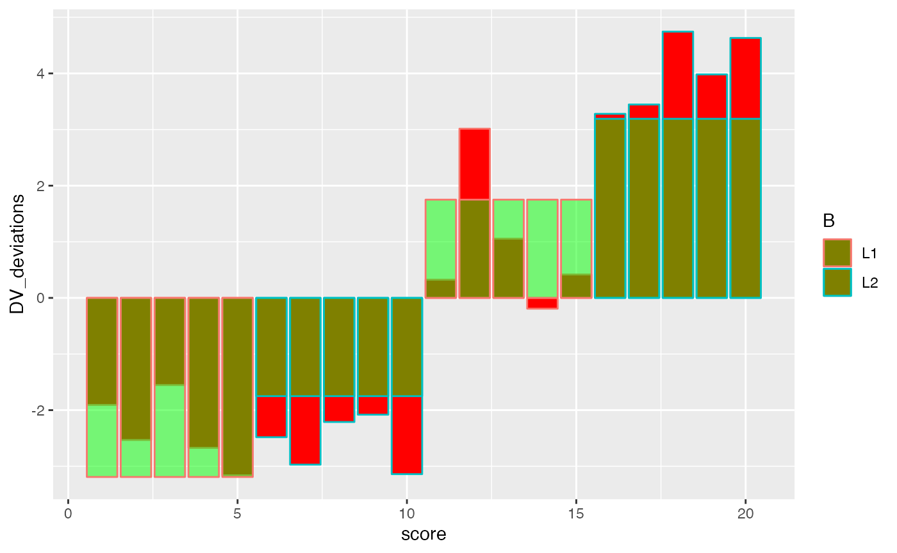
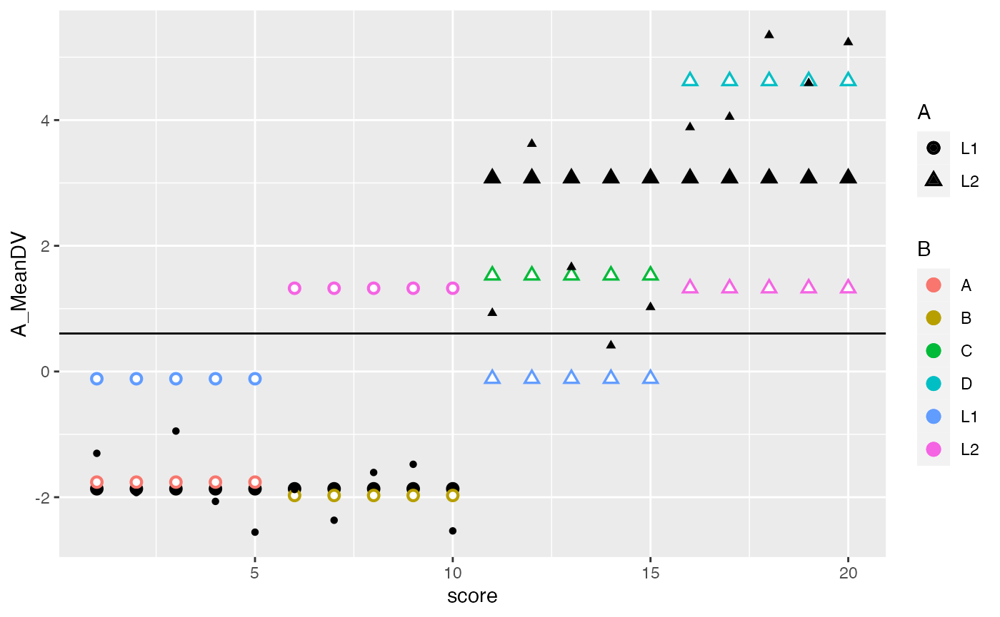
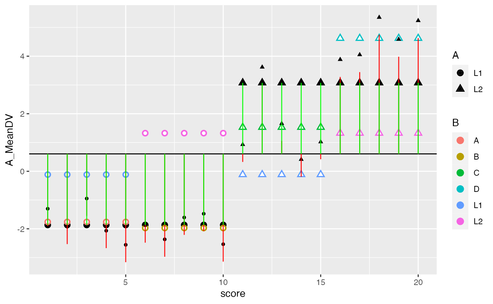

Lab7
Lab7.Rmd- Explain the concept of main effects and interactions with an example using R. For example, this could include a definition of main effects and interactions and a figure depicting main effects and an interaction along with an explanation of the patterns for each. A major point of this problem is for you to to engage in the task of developing an explanation of these concepts that would 1) be helpful for you to understand the concepts, and 2) could be helpful for others to understand these concepts. (3 points)
library(tidyverse)
#> ── [1mAttaching packages[22m ─────────────────────────────────────── tidyverse 1.3.1 ──
#> [32m✓[39m [34mggplot2[39m 3.3.5 [32m✓[39m [34mpurrr [39m 0.3.4
#> [32m✓[39m [34mtibble [39m 3.1.6 [32m✓[39m [34mdplyr [39m 1.0.8
#> [32m✓[39m [34mtidyr [39m 1.2.0 [32m✓[39m [34mstringr[39m 1.4.0
#> [32m✓[39m [34mreadr [39m 2.1.2 [32m✓[39m [34mforcats[39m 0.5.1
#> Warning: package 'tidyr' was built under R version 4.1.2
#> Warning: package 'readr' was built under R version 4.1.2
#> Warning: package 'dplyr' was built under R version 4.1.2
#> ── [1mConflicts[22m ────────────────────────────────────────── tidyverse_conflicts() ──
#> [31mx[39m [34mdplyr[39m::[32mfilter()[39m masks [34mstats[39m::filter()
#> [31mx[39m [34mdplyr[39m::[32mlag()[39m masks [34mstats[39m::lag()
n <- 10
factorial_data <- tibble(A = factor(rep(c("L1","L2"), each = n)),
B = factor(rep(rep(c("L1","L2"), each=n/2),2)),
C = factor(rep(c("A","B","C","D"), each = n/2)),
DV = c(rnorm(n/2,-2,1),
rnorm(n/2,-2,1),
rnorm(n/2,2,1),
rnorm(n/2,4,1))
)
A_means <- factorial_data %>%
group_by(A) %>%
summarise(mean_DV_A = mean(DV))
B_means <- factorial_data %>%
group_by(B) %>%
summarise(mean_DV_B = mean(DV))
cell_means <- factorial_data %>%
group_by(A,B) %>%
summarise(mean_DV_cell = mean(DV))
#> [1m[22m`summarise()` has grouped output by 'A'. You can override using the `.groups`
#> argument.
grand_mean <- mean(factorial_data$DV)
factorial_data <- factorial_data %>%
mutate(A_MeanDV = rep(A_means$mean_DV_A, each = n),
B_MeanDV = rep(rep(B_means$mean_DV_B, each = n/2),2),
cell_MeanDV = rep(cell_means$mean_DV_cell, each = n/2),
grand_mean
) %>%
mutate(DV_deviations = DV-grand_mean,
A_deviations = (A_MeanDV - grand_mean),
B_deviations = (B_MeanDV - grand_mean),
straight_cell_deviations = (cell_MeanDV - grand_mean),
cell_deviations = (A_MeanDV-grand_mean) + (B_MeanDV-grand_mean) - (cell_MeanDV-grand_mean)
)
summary(aov(DV~A*B, data=factorial_data))
#> Df Sum Sq Mean Sq F value Pr(>F)
#> A 1 122.09 122.09 185.74 3.19e-10 ***
#> B 1 10.37 10.37 15.78 0.001095 **
#> A:B 1 13.66 13.66 20.78 0.000322 ***
#> Residuals 16 10.52 0.66
#> ---
#> Signif. codes: 0 '***' 0.001 '**' 0.01 '*' 0.05 '.' 0.1 ' ' 1
sum(factorial_data$A_deviations^2)
#> [1] 122.0947
sum(factorial_data$B_deviations^2)
#> [1] 10.36959
sum(factorial_data$straight_cell_deviations^2) # note these are incorrect
#> [1] 146.1229
sum(factorial_data$cell_deviations^2)
#> [1] 13.65857
sum(factorial_data$DV_deviations^2)
#> [1] 156.6404factorial_data <- factorial_data %>%
mutate(score = 1:(n*2))
ggplot(factorial_data, aes(x=score, shape=A, color=B))+
geom_hline(yintercept = mean(factorial_data$DV))+
geom_point(aes(y=DV))+
geom_segment(aes(xend = score, y=grand_mean, yend = DV), alpha = .9, color="red")
ggplot(factorial_data, aes(x=score, shape=A, color=B))+
geom_bar(aes(y=DV_deviations), fill="red", stat="identity")+
geom_bar(aes(y=A_deviations), fill="green", stat="identity", alpha=.5)
ggplot(factorial_data, aes(x=score, shape=A, color=B))+
geom_bar(aes(y=DV_deviations), fill="red", stat="identity")+
geom_bar(aes(y=B_deviations), fill="green", stat="identity", alpha=.5)
ggplot(factorial_data, aes(x=score, shape=A, color=B))+
geom_bar(aes(y=DV_deviations), fill="red", stat="identity")+
geom_bar(aes(y=cell_deviations), fill="green", stat="identity", alpha=.5)
ggplot(factorial_data, aes(x=score, shape=A, color=B))+
geom_bar(aes(y=DV_deviations), fill="red", stat="identity")+
geom_bar(aes(y=(A_deviations+B_deviations)), fill="green", stat="identity", alpha=.5)
ggplot(factorial_data, aes(x=score, shape=A, color=B))+
geom_bar(aes(y=DV_deviations), fill="red", stat="identity")+
geom_bar(aes(y=(A_deviations+B_deviations+cell_deviations)), fill="green", stat="identity", alpha=.5)
factorial_data <- factorial_data %>%
mutate(score = 1:(n*2))
ggplot(factorial_data, aes(x=score, shape=A, color=B))+
geom_hline(yintercept = mean(factorial_data$DV))+
geom_point(aes(y=A_MeanDV), size= 3,color="black") +
geom_point(aes(y=B_MeanDV), size=3) +
geom_point(aes(y=B_MeanDV), color="white") +
geom_point(aes(y=cell_MeanDV,color=C), size=3) +
geom_point(aes(y=cell_MeanDV), color="white") +
geom_point(aes(y=DV), color="black")
## SS Total
ggplot(factorial_data, aes(x=score, shape=A, color=B))+
geom_hline(yintercept = mean(factorial_data$DV))+
geom_point(aes(y=A_MeanDV), size= 3,color="black") +
geom_point(aes(y=B_MeanDV), size=3) +
geom_point(aes(y=B_MeanDV), color="white") +
geom_point(aes(y=cell_MeanDV,color=C), size=3) +
geom_point(aes(y=cell_MeanDV), color="white") +
geom_point(aes(y=DV), color="black") +
geom_segment(aes(xend = score, y=grand_mean, yend = DV_deviations), alpha = .9, color="red")
## SS A
ggplot(factorial_data, aes(x=score, shape=A, color=B))+
geom_hline(yintercept = mean(factorial_data$DV))+
geom_point(aes(y=A_MeanDV), size= 3,color="black") +
geom_point(aes(y=B_MeanDV), size=3) +
geom_point(aes(y=B_MeanDV), color="white") +
geom_point(aes(y=cell_MeanDV,color=C), size=3) +
geom_point(aes(y=cell_MeanDV), color="white") +
geom_point(aes(y=DV), color="black") +
geom_segment(aes(xend = score, y=grand_mean, yend = DV_deviations), alpha = .9, color="red") +
geom_segment(aes(xend = score, y=grand_mean, yend = A_MeanDV), alpha = .9, color="green")
ggplot(factorial_data, aes(x=score, shape=A, color=B))+
geom_hline(yintercept = mean(factorial_data$DV))+
geom_point(aes(y=A_MeanDV), size= 3,color="black") +
geom_point(aes(y=B_MeanDV), size=3) +
geom_point(aes(y=B_MeanDV), color="white") +
geom_point(aes(y=cell_MeanDV,color=C), size=3) +
geom_point(aes(y=cell_MeanDV), color="white") +
geom_point(aes(y=DV), color="black") +
geom_segment(aes(xend = score, y=grand_mean, yend = DV_deviations), alpha = .9, color="red") +
geom_segment(aes(xend = score, y=grand_mean, yend = B_MeanDV), alpha = .9, color="green")
ggplot(factorial_data, aes(x=score, shape=A, color=B))+
geom_hline(yintercept = mean(factorial_data$DV))+
geom_point(aes(y=A_MeanDV), size= 3,color="black") +
geom_point(aes(y=B_MeanDV), size=3) +
geom_point(aes(y=B_MeanDV), color="white") +
geom_point(aes(y=cell_MeanDV,color=C), size=3) +
geom_point(aes(y=cell_MeanDV), color="white") +
geom_point(aes(y=DV), color="black") +
geom_segment(aes(xend = score, y=grand_mean, yend = DV_deviations), alpha = .9, color="red") +
geom_segment(aes(xend = score, y=grand_mean, yend = cell_MeanDV), alpha = .9, color="green")
- Complete the 2x2 factorial lab found here https://crumplab.github.io/statisticsLab/lab-10-factorial-anova.html, up to section 10.4.8. More specifically, your task is to follow that lab exercise to load in the data, transform the data into long-format, conduct a 2x2 between subjects ANOVA, and write a short results section reporting the main effects and interaction. (3 points)
library(data.table)
#>
#> Attaching package: 'data.table'
#> The following objects are masked from 'package:dplyr':
#>
#> between, first, last
#> The following object is masked from 'package:purrr':
#>
#> transpose
all_data <- fread("data/stroop_stand.csv")
RTs <- c(as.numeric(unlist(all_data[,1])),
as.numeric(unlist(all_data[,2])),
as.numeric(unlist(all_data[,3])),
as.numeric(unlist(all_data[,4]))
)
Congruency <- rep(rep(c("Congruent","Incongruent"),each=50),2)
Posture <- rep(c("Stand","Sit"),each=100)
Subject <- rep(1:50,4)
stroop_df <- data.frame(Subject,Congruency,Posture,RTs)
library(tidyr)
stroop_long<- gather(all_data, key=Condition, value=RTs,
congruent_stand, incongruent_stand,
congruent_sit, incongruent_sit)
new_columns <- tstrsplit(stroop_long$Condition, "_", names=c("Congruency","Posture"))
stroop_long <- cbind(stroop_long,new_columns)
stroop_long <- cbind(stroop_long,Subject=rep(1:50,4))
library(dplyr)
library(ggplot2)
library(tidyr)
plot_means <- stroop_long %>%
group_by(Congruency,Posture) %>%
summarise(mean_RT = mean(RTs),
SEM = sd(RTs)/sqrt(length(RTs)))
#> [1m[22m`summarise()` has grouped output by 'Congruency'. You can override using the
#> `.groups` argument.
ggplot(plot_means, aes(x=Posture, y=mean_RT, group=Congruency, fill=Congruency))+
geom_bar(stat="identity", position="dodge")+
geom_errorbar(aes(ymin=mean_RT-SEM, ymax=mean_RT+SEM),
position=position_dodge(width=0.9),
width=.2)+
theme_classic()+
coord_cartesian(ylim=c(700,1000))
aov_out<-aov(RTs ~ Congruency*Posture, stroop_long)
summary_out<-summary(aov_out)
summary_out
#> Df Sum Sq Mean Sq F value Pr(>F)
#> Congruency 1 576822 576822 43.734 3.49e-10 ***
#> Posture 1 32303 32303 2.449 0.119
#> Congruency:Posture 1 6560 6560 0.497 0.481
#> Residuals 196 2585080 13189
#> ---
#> Signif. codes: 0 '***' 0.001 '**' 0.01 '*' 0.05 '.' 0.1 ' ' 1- In chapter 10 of Crump et al. (2018), there is a discussion of patterns of main effects and interactions that can occur in a 2x2 design, which represents perhaps the simplest factorial design. There are 8 possible outcomes discussed https://crumplab.github.io/statistics/more-on-factorial-designs.html#looking-at-main-effects-and-interactions. Examples of these 8 outcomes are shown in two figures, one with bar graphs, and one with line graphs. Reproduce either of these figures using ggplot2. (3 points)
p1<- data.frame(IV1 = c("A","A","B","B"),
IV2 = c("1","2","1","2"),
means = c(6,6,6,6))
p2<- data.frame(IV1 = c("A","A","B","B"),
IV2 = c("1","2","1","2"),
means = c(10,10,5,5))
p3<- data.frame(IV1 = c("A","A","B","B"),
IV2 = c("1","2","1","2"),
means = c(10,13,5,2))
p4<- data.frame(IV1 = c("A","A","B","B"),
IV2 = c("1","2","1","2"),
means = c(5,10,10,15))
p5<- data.frame(IV1 = c("A","A","B","B"),
IV2 = c("1","2","1","2"),
means = c(10,18,5,7))
p6<- data.frame(IV1 = c("A","A","B","B"),
IV2 = c("1","2","1","2"),
means = c(10,2,10,2))
p7<- data.frame(IV1 = c("A","A","B","B"),
IV2 = c("1","2","1","2"),
means = c(2,12,5,9))
p8<- data.frame(IV1 = c("A","A","B","B"),
IV2 = c("1","2","1","2"),
means = c(5,10,10,5))
all_22s <- rbind(p1,p2,p3,p4,p5,p6,p7,p8)
type <- c(rep("~1, ~2, ~1x2",4),
rep("1, ~2, ~1x2",4),
rep("1, ~2, 1x2",4),
rep("1, 2, ~1x2",4),
rep("1, 2, 1x2",4),
rep("~1, 2, ~1x2",4),
rep("~1, 2, 1x2",4),
rep("~1, ~2, 1x2",4))
type<-as.factor(type)
all_22s <- cbind(all_22s,type)
ggplot(all_22s, aes(x=IV1, y=means, group=IV2, fill=IV2))+
geom_bar(stat="identity", position="dodge")+
theme_classic()+
facet_wrap(~type, nrow=2)+
theme(legend.position = "top")
ggplot(all_22s, aes(x=IV1, y=means, group=IV2, color=IV2))+
geom_point()+
geom_line()+
theme_classic()+
facet_wrap(~type, nrow=2)+
theme(legend.position = "top")
- In the conceptual section of this lab we used an R simulation to find the family-wise type I error rate for a simple factorial design with 2 independent variables. Use an R simulation to find the family-wise type I error rate for a factorial design with 3 independent variables. (3 points)
sims <- rbinom(10000,7,.05)
length(sims[sims > 0])/10000
#> [1] 0.2907
save_sim <- tibble()
# loop to conduct i number of simulations
for(i in 1:10000){
#simulate null data for a 2x2
n <- 12
factorial_data <- tibble(A = factor(rep(c("L1","L2"), each = n)),
B = factor(rep(rep(c("L1","L2"), each = n/2),2)),
C = factor(rep(c("L1","L2"), n)),
DV = rnorm(n*2,0,1))
# compute ANOVA
output <- summary(aov(DV ~ A*B*C, data = factorial_data))
#save p-values for each effect
sim_tibble <- tibble(p_vals = output[[1]]$`Pr(>F)`[1:7],
effect = c("A","B","C","AxB","AxC","BxC","AxBxC"),
sim = rep(i,7))
#add the saved values to the overall tibble
save_sim <-rbind(save_sim,sim_tibble)
}
type_I_errors <- save_sim %>%
filter(p_vals < .05) %>%
group_by(sim) %>%
count()
dim(type_I_errors)[1]/10000
#> [1] 0.2767- Show that a 2x2 factorial ANOVA can be accomplished by using a one-factor ANOVA with three linear contrasts. (3 points)
library(tibble)
library(dplyr)
n <- 10
factorial_data <- tibble(A = factor(rep(c("L1","L2"), each = n)),
B = factor(rep(rep(c("L1","L2"), each = n/2),2)),
DV = rnorm(n*2,0,1))
aov_out <- aov(DV ~ A*B, data = factorial_data)
summary(aov_out)
#> Df Sum Sq Mean Sq F value Pr(>F)
#> A 1 0.008 0.0079 0.010 0.9227
#> B 1 0.903 0.9026 1.105 0.3088
#> A:B 1 2.954 2.9539 3.616 0.0754 .
#> Residuals 16 13.071 0.8170
#> ---
#> Signif. codes: 0 '***' 0.001 '**' 0.01 '*' 0.05 '.' 0.1 ' ' 1
factorial_data <- factorial_data %>%
mutate(C = factor(rep(c("A","B","C","D"), each = n/2)))
# define your new set of contrasts
c1 <- c(1,1,-1,-1)
c2 <- c(1,-1,1,-1)
c3 <- c(1,-1,-1,1)
# combine them into the columns of a matrix
my_contrasts <- cbind(c1, c2, c3)
# assign them to the contrast property for your IV
contrasts(factorial_data$C) <- my_contrasts
aov_out <- aov(DV ~ C, data = factorial_data)
(full_summary <- summary.aov(aov_out,
split=list(C=list("A"=1,
"B" = 2,
"A:B"= 3)
)
)
)
#> Df Sum Sq Mean Sq F value Pr(>F)
#> C 3 3.864 1.2881 1.577 0.2340
#> C: A 1 0.008 0.0079 0.010 0.9227
#> C: B 1 0.903 0.9026 1.105 0.3088
#> C: A:B 1 2.954 2.9539 3.616 0.0754 .
#> Residuals 16 13.071 0.8170
#> ---
#> Signif. codes: 0 '***' 0.001 '**' 0.01 '*' 0.05 '.' 0.1 ' ' 1